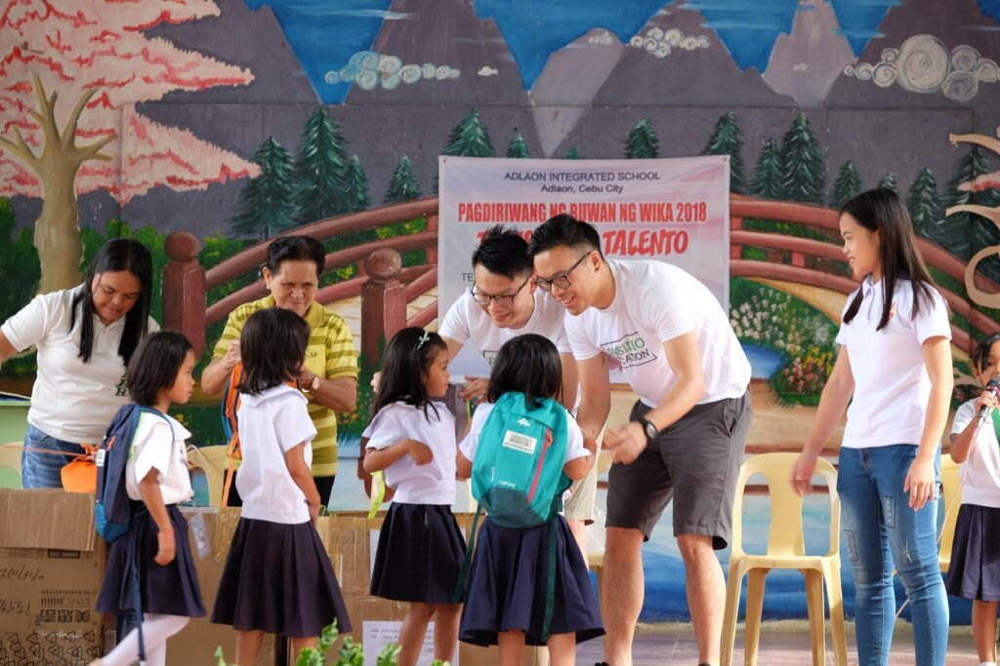

Key Social Welfare Programs
- Medical Assistance Programs
- Feeding Programs
- Livelihood Programs
- Educational Support
- Disaster Relief Efforts
Offering free or subsidized healthcare services for low-income families, including medical checkups, surgeries, and medications.

Implementing community-based feeding programs to combat malnutrition among children, particularly in informal settlements.

Helping families and individuals with limited opportunities by offering skills training and start-up grants to encourage self-sufficiency.

Providing scholarships, school supplies, and support for students from poor backgrounds to ensure they have access to quality education.

immediate relief in the form of food, shelter, and medical supplies to families affected by natural disasters.

Community Engagement
Vice Mayor Garcia believes in the power of community engagement and ensures that local leaders and residents are involved in identifying the needs of vulnerable sectors. Community consultations are regularly held to understand their challenges and improve the delivery of social services.
Future Plans
- Expansion of health services by establishing mobile clinics to reach remote areas.
- Launch of a "Cebu City Social Safety Net" to offer better long-term support for the elderly, persons with disabilities, and vulnerable children.
- Partnerships with non-governmental organizations to address homelessness and provide permanent housing solutions.